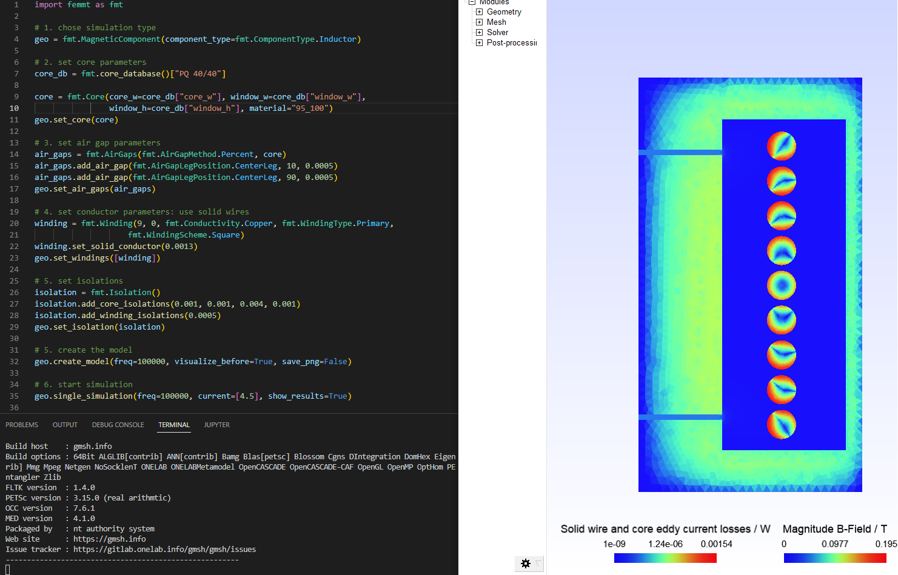

FEM Magnetics Toolbox (FEMMT)
Python toolbox to generate preconfigured figures for FEM simulation tools in power electronics.
The toolbox is accessible via python code or a graphical user interface (GUI), which current development status is experimental.
All core shapes are simulated as 2D symmetric cores, as shown in the figure.

Overview features
Stable features
- Component features:
2D axi-symmetric cylindrical simplification
Arbitrary (distributed) air gap positioning in center leg
Variety of winding interleaving schemes
- Special geometries:
Magnetic shunt (transformer with integrated inductor)
Stacked core (transformer with integrated inductor)
Round litz wire, implemented according to Niyomsatian et al.: Frequency-domain homogenization for litz-wire bundles in finite element calculations
Round and rectangular solid wires
Different winding schemes (hexagonal, left/right, top/down, …)
Parallel connection of solid wires
Insulation distances (winding2core, winding2winding)
Many examples to learn and understand FEMMT
- Databases
Litz wire database
Core geometry database
Conductor materials: temperature curves
Ferrit materials: permeability / permittivity material database (datasheets and own measurements)
- Solver features:
Implemented using ONELAB
Current excitation
Frequency domain solver
Litz wire loss model for proximity and skin effect (Niyomsatian et al.: Frequency-domain homogenization for impedance characterization of litz-wire transformers in 2-D finite element models)
- Core loss calculation for real materials (data from material database)
Amplitude dependent loss angle (Local resolution of complex permeability)
Equivalent permittivity data for eddy current calculations
Effect of dimensional resonance is considered
- Thermal solver
Thermal conduction (Poisson equation)
Fixed temperature and isolation boundary conditions
Verified model for potted core
- Pre/Post processing:
Linear eddy current analysis via input current based FFT
Pre-visualization of ferrite material (measurement) data interpolation
Field visualization in gmsh GUI (magnetic flux density, eddy current losses, …)
Inductance matrix for n-winding transformer
Transformer equivalent diagrams for 2- and 3-winding transformer
- Optimization:
Parallel computing to speed up simulations (no cpu core limitation)
Examples for Pareto optimization to adapt to your own optimization problem
Experimental features (under development)
- Component features:
Reluctance module is currently working for a single optimization example and not fully implemented yet.
- Solver features:
Time domain solver is experimental
- Optimization:
Advanced optimization algorithms by connecting to optuna
- GUI:
Experimental in general
Planned features (Roadmap for 202x)
- Solver features:
Core loss calculation from non-sinusoidal flux
Local temperature dependency (currently only lumped temperature assignment, e.g. general temperature for all windings)
Not supported features
- Not supported component features:
Toroidal core
- Not supported solver features:
Voltage excitation
Documentation
Please have a look at the documentation. You will find tutorials and a function description.
Literature
Installation
To run FEMMT python (version 3.10 or above) and onelab is needed.
ONELAB installation
Go to https://onelab.info/
Download the Desktop Version for your OS (Windows, Linux or macOS)
Unpack the software and remember the file path. This will be needed later when installing FEMMT.
Further steps for macOS(ARM)
Go to https://onelab.info/
Download the Desktop Version for Windows
Copy the “conveks.py” and “Onelab.py” files and paste them into the “onelab” folder
Go to http://getdp.info/
Download the macOS(ARM) Version
Open the downloaded folder, navigate to “bin” and copy the “getdp” application file
Paste the copied file into your “onelab” folder
Install FEMMT
FEMMT can be installed using the python pip package manager. This is the stable release version (recommended).
pip install femmt
For working with the latest version, refer to the documentation.
Minimal example
This toolbox is able to build a complete FEM simulation from simple Python code. The following figure shows the Python code on the left and the corresponding FEM simulation on the right. 
To run a minimal example please have a look at the examples.
GUI (Experimental)
There is a first preview for a GUI. Installing this is a bit cumbersome at first, but will be simplified in the future:
Download the complete repository via
Code->Download ZIPand unpack it.Or clone the repository
Install the development version of femmt using
pip install -e .Run python
.../path-to_femmt/femmt/gui/femmt_gui.py
Please note, the GUI is experimental.

Troubleshooting
If the working directory is within OneDrive, there are problems writing .dat files, which are basic for FEMMT. The following error messages appear:
The system cannot find the file specified: your_directory/femmt/electro_magnetic/Strands_Coefficients/coeff/pB_RS_la0.6_4layer.dat
FileNotFoundError: [Errno 2] No such file or directory: your_directory/results/values/j2F_1.dat
The solution is to place the working directory of FEMMT including the Python virtual environment outside the OneDrive folder.
Bug Reports
Please use the issues report button within github to report bugs.
Contributing
Pull requests are welcome. For major changes, please open an issue first to discuss what you would like to change. For contributing, please refer to this section.
Changelog
Find the changelog here.
License
History and project status
This project was initially written in matlab using FEMM simulation tool. It became clear that the project was no longer a small project. The project should be completely rewritten, because many new complex levels have been added. To place the project in the open source world, the programming language python is used.